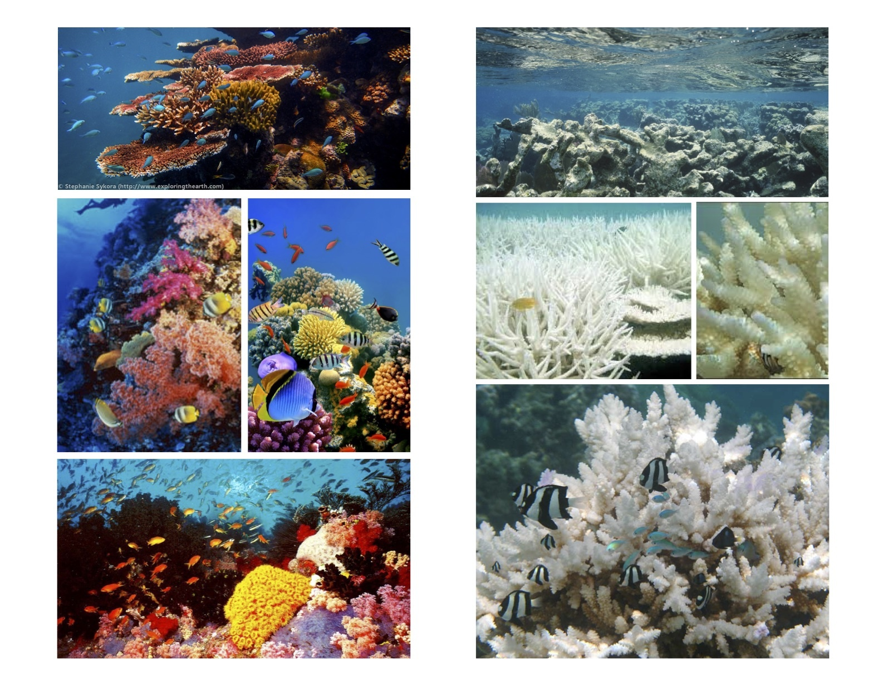
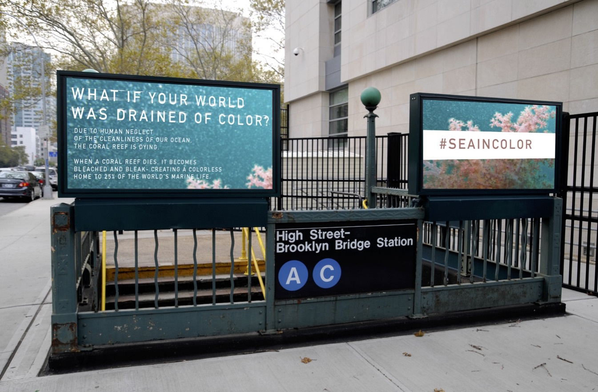
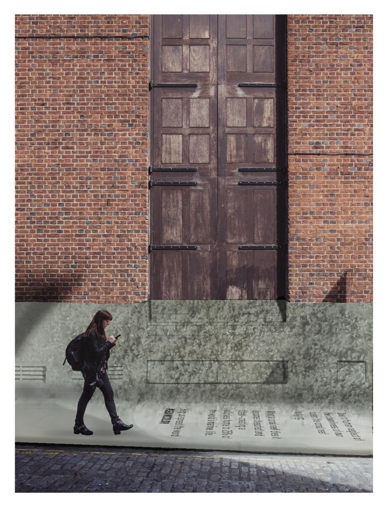
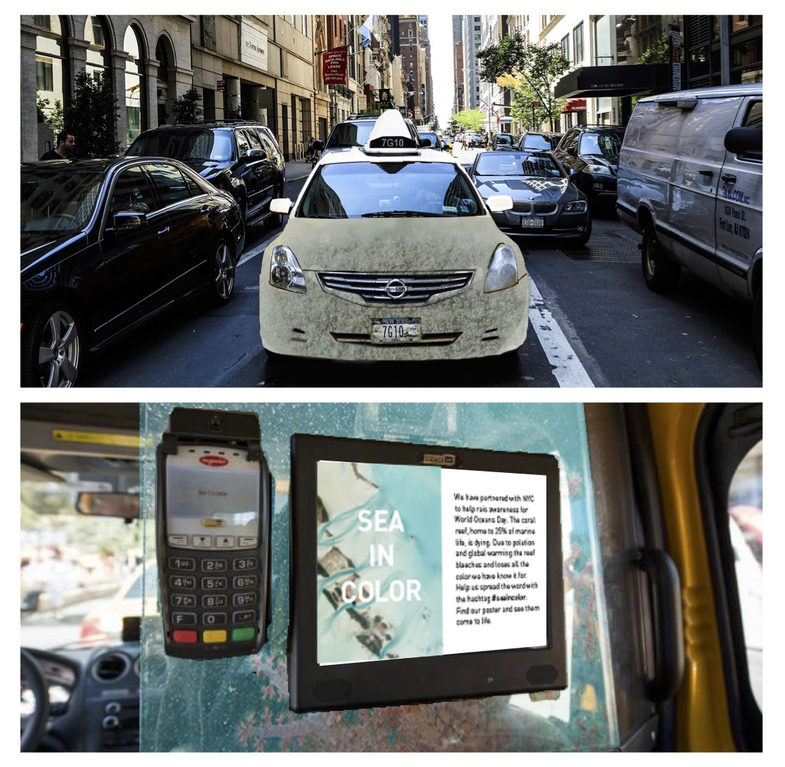
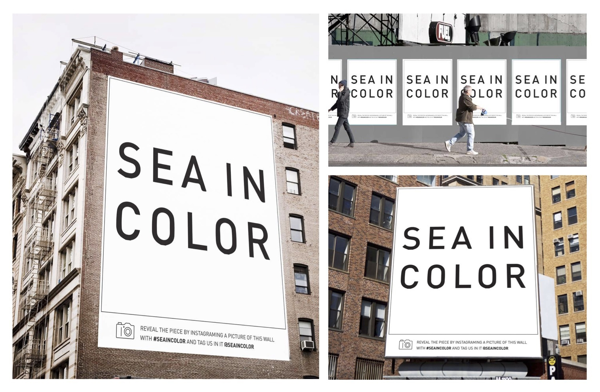
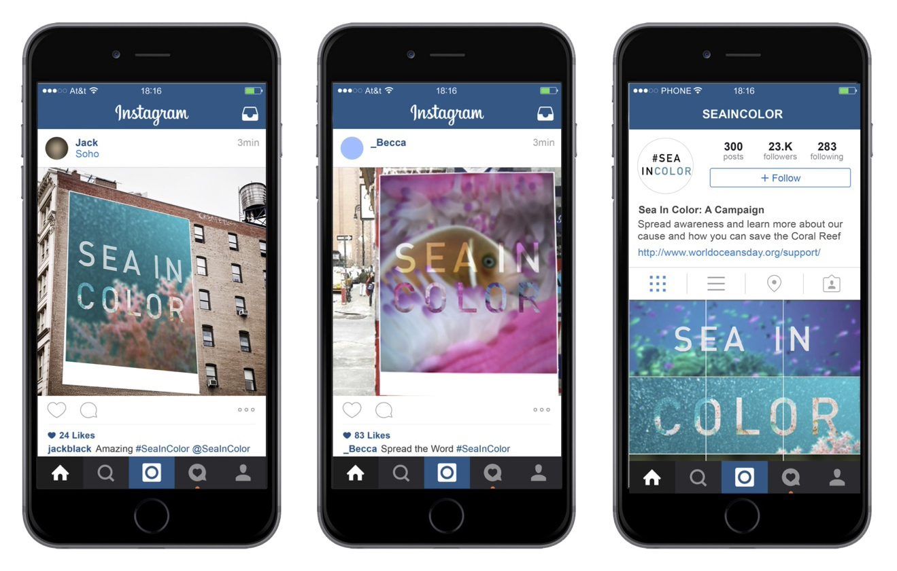

WORLD OCEAN DAY: SEA IN COLOR
PROJECT DESCRIPTION
Sea in Color is a campaign done in collaboration to promote clean oceans for. World Ocean Day 2016. My partners and I chose to focus on the death and damage of the Coral Reef, which is drained of color and becomes a stark white when it dies. Our campaign is focused on the duality of color and vitality, to help raise awareness of the death of the Coral Reef.
Great work can't be done with out: Aashna Shah, Sam Cohen
Project Director: Jakob Daschek
Deliverables:
. Print ads
. Outdoor installations
. Social media campaign
coral reef:
.“rainforest of the ocean”
.home of 25% of the world's marine life
.Dying because of climate change”(Greenhouse gas emissions, temperature rise, etc.) + over fishing
.Becomes greyish – white when its dying
Great work can't be done with out: Aashna Shah, Sam Cohen
Project Director: Jakob Daschek
Deliverables:
. Print ads
. Outdoor installations
. Social media campaign
coral reef:
.“rainforest of the ocean”
.home of 25% of the world's marine life
.Dying because of climate change”(Greenhouse gas emissions, temperature rise, etc.) + over fishing
.Becomes greyish – white when its dying
MOCK UP + ORIGINAL WORK

#SEAINCOLOR
Our idea is inspired by the duality that comes from eh shift from color, (life, vitality) and death(drainage of color) of the coral reef. With #SEAINCOLOR, we want to rise awareness as well as encourage viewers to recognize the issue from their own perspective. What if your world was drained of color?
Our idea is inspired by the duality that comes from eh shift from color, (life, vitality) and death(drainage of color) of the coral reef. With #SEAINCOLOR, we want to rise awareness as well as encourage viewers to recognize the issue from their own perspective. What if your world was drained of color?

Due to human neglect of the cleanliness of our ocean the coral reef is dying.
When a coral reef dies it becomes bleached and bleak – creating a colorless home to 25% of the worlds's marine life.
Help us spread the word
#SEAINCOLOR
When a coral reef dies it becomes bleached and bleak – creating a colorless home to 25% of the worlds's marine life.
Help us spread the word
#SEAINCOLOR



